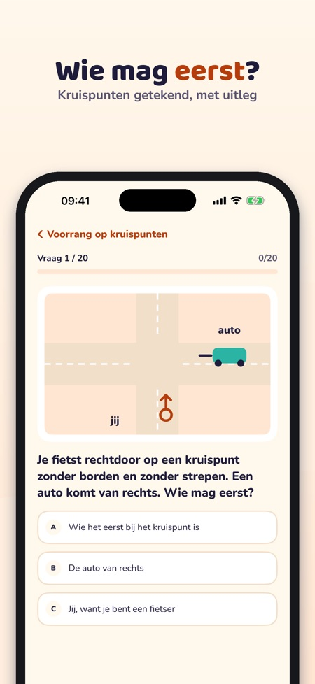
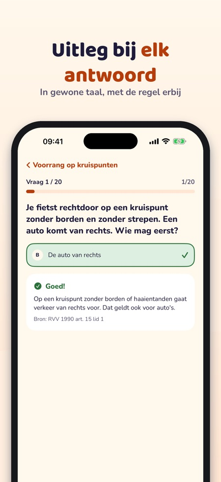
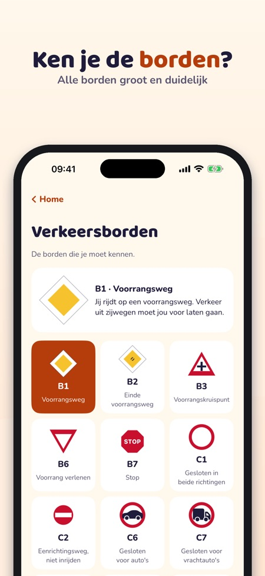

Verkeersheld helpt kinderen oefenen voor het theoretisch verkeersexamen, met kruispunten, borden en fietsregels in gewone taal. Handig om samen met je kind te doen.



Voor kinderen die oefenen voor het theoretisch verkeersexamen van groep 7 en het fietsexamen.
Het proefexamen is zoals het echte examen: 25 vragen, geslaagd bij 16 goed.
Ja, de app werkt zonder internet.
Je kunt 20 vragen, de verkeersborden, de begrippenlijst en de checklist zonder aankoop gebruiken.
Nee. De volledige versie is een eenmalige aankoop die alle vragen, proefexamens en statistiek ontgrendelt.
Nee, kopen en links naar buiten gaan alleen via een ouder (ouderlijk toezicht).
Ja, ook voor de cyklistprøve (Denemarken), de Radfahrprüfung (Duitsland) en de karta rowerowa (Polen): kies het land in de app.
Verkeersheld helpt kinderen oefenen voor het theoretisch verkeersexamen – met kruispunten, borden en fietsregels, uitgelegd in gewone taal.
Je kunt 20 vragen, de verkeersborden, de begrippenlijst en de checklist zonder aankoop gebruiken. De volledige versie is een eenmalige aankoop die alle vragen, proefexamens en statistiek ontgrendelt. Geen abonnement. Kopen en links naar buiten gaan alleen via een ouder (ouderlijk toezicht).
Ook voor de cyklistprøve (Denemarken), de Radfahrprüfung (Duitsland) en de karta rowerowa (Polen): kies het land in de app.
Verkeersheld is onafhankelijk en neemt geen examen af. Het examen doe je op school. De app verzamelt geen gegevens en heeft geen advertenties.